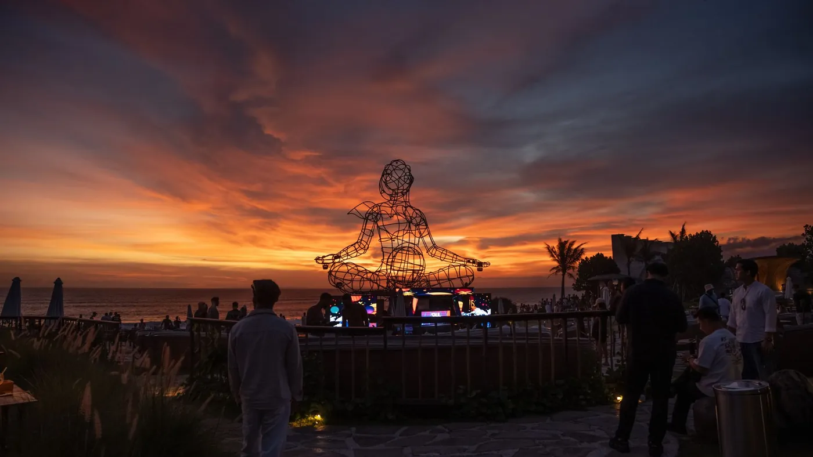

blacksandsoasis.com
Black Sands Oasis
Виллы в стиле Desert Modernism: 6‑метровые потолки, натуральные материалы, приватные сады и бассейны
Выбрать виллу

Город будущего у океана
Культурный кластер на западном побережье Бали: школы, арт‑объекты, спа, ботанические сады и рестораны. Готовая среда для жизни и инвестиций
Nuanu с высоты, западное побережье Бали
Пространство, где инновации встречаются с природой: тишина и приватность, а всё нужное для работы, отдыха и инвестиций в шаговой доступности




Готовим площадку UNIT. для аренды и продажи вилл и апартаментов. У каждого объекта будут загрузка и цена за ночь по рынку, чтобы сравнить доходность до сделки. Первыми там появятся объекты под управлением UNIT.
Узнать о запускеПока unit.now готовится к запуску, посмотрите наши проекты в Nuanu
Виллы в стиле Desert Modernism: 6‑метровые потолки, натуральные материалы, приватные сады и бассейны
Выбрать виллу


Современный ретрит с коворкингом, сауной, кинотеатром и кафе в окружении красивейшей природы
Посмотреть ретрит